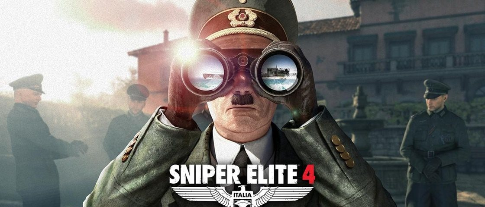
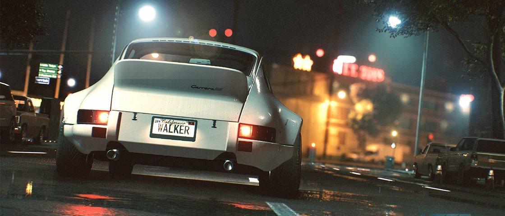
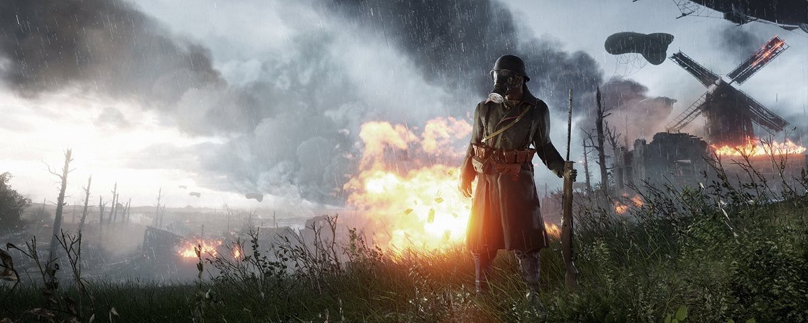

Fim da guerra? DLC de Sniper Elite 4 tem Hitler como alvo de eliminação
Postado em 11 de Dezembro 2016
acompanhando as notícias referentes a Sniper Elite 4,já deve saber que o game terá seu enredo ambientado na Itália. E, durante as suas andanças, um rosto muito conhecido promete dar as caras: o de Adolf Hitler, líder do exército alemão e um dos personagens mais importantes da Segunda Guerra Mundial. Segundo informações divulgadas no site de notícias do Xbox, o extra “Target:Führer” estará disponível gratuitamente no dia do lançamento para todos que fizerem a compra antecipada do jogo. Neste pacote para download, o agente Karl Fairburne é enviado para a ilha de Sendari com o objetivo de eliminar o almirante responsável pela embarcação – e ele é ninguém mais, ninguém menos que o líder do Terceiro Reich.Para dar cabo dessa missão, você é livre para escolher a forma como quer agir.
Postado por João Victor SouzaEA perde a licença sobre a Porsche.
Postado em 12 de Dezembro 2016
Durante muito tempo,a Electronic Arts aproveitou algo exclusivo que ninguém mais poderia colocar as mãos sem pagar uma taxinha extra: a marca Porsche em jogos de corrida. Você já deve ter reparado que a maioria dos jogos de carros modernos não contam com uma das maiores empresas do ramo, e esse é o motivo. Apesar de ter usufruído dos veículos esportivos alemães durante muito tempo a Porsche já não vê mais essa parceria com bons olhos e crê que não há mais benefício em mantê-la. Alguns rumores circulavam desde 2015, quando a marca apareceu na DLC de Forza Horizon 2 e posteriormente em Forza Motorsport 6.as que só podem ser feitas usando os videogames como forma de mídia, e quero continuar perseguindo essas coisas".
Postado por João Victor SouzaAtualização de Battlefield 1 traz novo mapa.
Postado em 13 de Dezembro 2016
dos melhores shooters do ano acaba de ganhar um montão de novidades–e todas muito bem-vindas.Battlefield 1 está recebendo nada menos que um novo mapa,lançador de granadas,ajustes no gameplay,correções em bugs,melhorias em desempenho e outras adições. Tudo isso será acrescentado ao shooter nesta terça-feira (13) em um update que será lançado para todas as versões do game (PS4, Xbox One e PC).O mapa se chama “Giant’s Shadow” (algo como “A Sombra do Gigante”,em tradução livre enquanto a oficial não chega),e só quem pré-comprou Battlefield 1 ou adquiriu o Premium Pass de DLCs poderá baixar sem custos adicionais. Vale lembrar que, para todo o restante, a fase só chega no dia 20. O mapa“Giant’s Shadow”é baseado na icônica Batalha de Sellee seu layout inclui uma imensa nave caída.O lançador de granadas é um novo dispositivo para a classe de suporte.
Postado por João Victor Souza